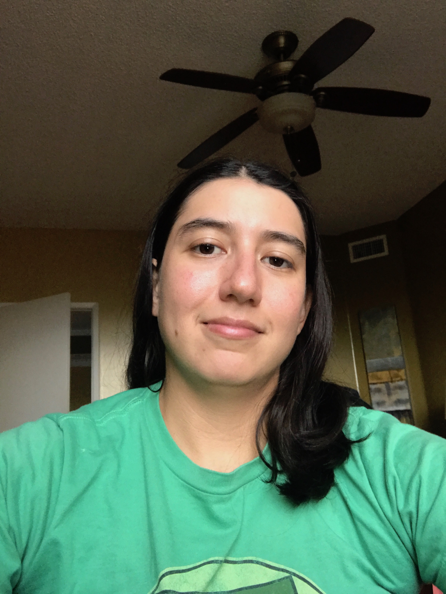

About
 I was originally born in Orlando, FL, but graduated from high school in Naples, FL. I received my Bachelor’s degree from Florida Gulf Coast University in Fort Myers, FL. After completing my Bachelor's degree I decided that I wanted to learn more about coding, and creating apllications, and web programs, so I enrolled in University of Central Florida’s Coding Bootcamp, in Fort Lauderdale. My aspiration is to do someday do something where I make an impact in our world. Whether that impact comes about through creating a new App, or website that changes or improves the way something is already done, or being lucky enough to come up with a new exciting idea that innovates something altogether.
My work history highlights, include previously working for the Apple Store, being a dispatch supervisor for UPS, and managing a high-volume restaurant in Naples. While working for the Apple Store, my job description was an Inventory Specialist. During my time there, I contributed to our team being ranked as one of the top 5 stores in the world, for our inventory accuracy.
Before working for Apple, I worked for UPS. One of the highlights of my UPS career was that I was able to be a part of the implementation team, that took the UPS Fort Myers building from an analog loading and dispatch system, to a completely digital version. My experience during that time taught me a lot about how computer systems and programs work, and the limitations that one can encounter in the real world, when it comes to digitizing an analog system.
My most recent job experience was working as a Culinary Professional at Seasons 52, while completing my Bachelor’s at FGCU. The most notable experience I gained from this job, I feel, is that it was a very valuable experience in crafting who I am today. I learned a lot about managing, and working with different types of people, and personality traits, and how to craft together and create a team. I also learned a lot about time management, as well as being able to further hone in my skills as a planner, as we would sometimes feed well over a thousand guests on holidays.
My true interest at heart though, is in tech. Where I hope to gain, and use my abilities to create something that lasts more than the 10-20 minutes it takes someone to eat a meal. Growing up I always had an interest in technology, and web design, which is why I enrolled in the Coding Boot Camp, and am seeking out opportunities in a new and exciting field.
Connect With Me